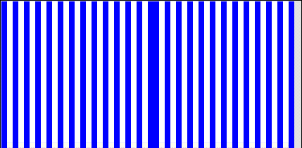

| 11. (a) Here are the results for one, two, three and four live cells in the first generation. |
|
| (b) The vertical lines seen in the first picture are live cells surrounded by dead cells. The
dead-live-dead gives live and live-dead-live gives dead configurations
show this combination of live and dead cells persists. |
| (c) Yes. The live-live-dead and dead-live-live give live
cells show that two adjacent live cells surrounded by a single dead cell on each side
will persist. The live-dead-live gives dead shows these columns of dead cells
will persist if surrounded by live cells. So two adjacent live cells, surrounded by
an alternating pattern of live and dead cells will persist forever. |
|  |